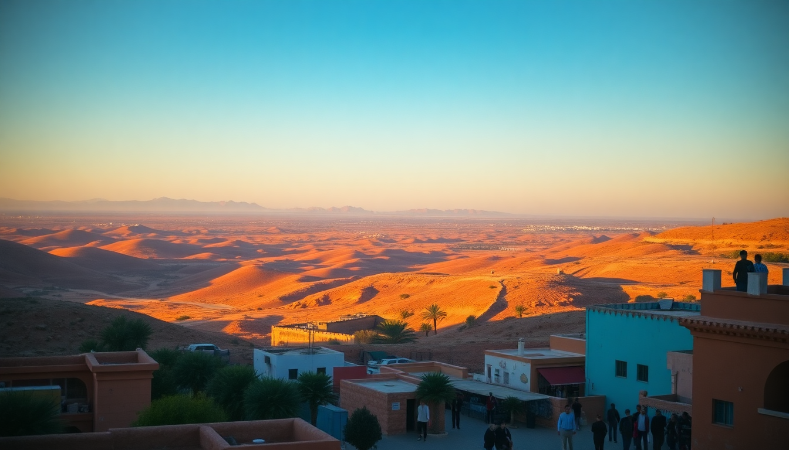

10-Day Morocco Itinerary: Marrakech, Sahara & Fes

A 10-day loop from Marrakech through the Sahara to Fes is the classic Moroccan road trip, but the logistics can trip you up if you don't plan the desert leg right. I just finished this exact route, and this guide covers the timing, the riads actually worth booking, and the one stretch of road where you should skip the rental car and hire a driver.
How do you get from Marrakech to the Sahara Desert efficiently?
The drive from Marrakech to Merzouga (the main Sahara gateway) takes a full day — about 9 hours with photo stops. Most people break it in two, and the natural halfway point is Dades Gorge or Todra Gorge. We stayed overnight at Hotel Xaluca Dades in Boumalne Dades, which has a pool and decent dinner buffet. Skip the tourist-trap camel rides at the roadside "berber tents" near Ouarzazate; they are overpriced and sad. Instead, wait for Erg Chebbi.
The Tizi n'Tichka pass is the first big climb out of Marrakech. Hairpin turns, tour buses, and stray goats. If you get car sick, take Dramamine before you leave. We stopped at Aït Benhaddou (the UNESCO ksar from Gladiator) for an hour — worth the 10 dirham entry fee, but ignore the "guides" who materialize at the gate and demand 200 dirham for a 15-minute walk.
- Route: Marrakech → Aït Benhaddou (2.5 hrs) → Ouarzazate (lunch) → Dades Gorge (3 hrs)
- Next day: Dades Gorge → Todra Gorge (1 hr) → Merzouga (3 hrs)
- Tip: Fill your gas tank in Ouarzazate. The stations between there and Merzouga are few and often selling low-grade fuel.
Which Sahara desert camp should you book?
There are dozens of camps near Merzouga, and they range from "mattress on sand" to "private tent with AC". We booked Kam Kam Dunes for two nights — one night in a standard tent, one in the "luxury" suite with a real bed and a flush toilet. The standard tent was fine (cold at night, bring a fleece), but the luxury upgrade is worth it if you value sleep. The camp runs a sunset camel trek into Erg Chebbi dunes that takes about 90 minutes. Our guide, Hassan, let us walk the camels up the big dune ourselves — better photos than the standard line.
Dinner is a tagine and couscous affair under a tent. Breakfast is bread, jam, and mint tea. Both are included. Alcohol is not served in the camp (dry policy), so bring your own if that matters. The night sky is genuinely incredible — no light pollution for miles.
- Camp options: Kam Kam Dunes (mid-range), Luxury Desert Camp (higher-end, closer to the dunes)
- Activity: Sunrise sandboarding (included at some camps) is fun but you will get sand everywhere
- Avoid: The "four-hour quad bike" tours that roar through the dunes at 7 AM — they ruin the quiet
What is the best way to travel from the Sahara to Fes?
The direct drive from Merzouga to Fes is about 7 hours via the N13 highway through Errachidia and Midelt. The landscape shifts from dunes to barren plateau to cedar forests near Azrou. We hired a private driver through our riad (about 1200 dirham for the car) because the middle section has limited phone signal and very few gas stations. Rental car companies in Morocco often ban taking their sedans on the dirt tracks near Merzouga anyway.
The only real stop worth making is Azrou, a small town in the Middle Atlas where wild Barbary macaques hang out by the roadside. Pull over carefully — locals sell bags of peanuts for 10 dirham, but feeding the monkeys is discouraged by park rangers. The cedar forest around Ifrane (called "Little Switzerland" for its alpine chalets) is a quick photo op, but you don't need to spend the night.
- Driver cost: 1000-1500 dirham for one-way Merzouga to Fes (negotiate in advance)
- Stop: Azrou monkey colony (30 min max)
- Warning: The N13 has long stretches of unpaved road near Errachidia — drive slow or hire a 4x4
How many days do you need in Fes?
Two full days in Fes is enough to see the medina without rushing. The city is a maze — literally. Google Maps stops working once you enter the Fes el-Bali walls. We stayed at Riad Fes Mayfez in the Medina, which has a rooftop terrace with views over the tanneries. The staff will draw you a map on a napkin, but you will still get lost. That is part of the experience.
Day one: hit the Chouara Tannery (the famous dye pits) early — before 9 AM to avoid the worst of the smell and the crowds. The leather shops above the tannery will offer you mint leaves to hold under your nose. Buy a leather pouf if you want, but negotiate hard: start at one-third the asking price. Then wander the Al-Attarine Madrasa (20 dirham entry) for the tile work, and grab lunch at Cafe Clock for their camel burger (actually good) and dates smoothie.
Day two: take a half-day trip to Meknes (30 minutes by grand taxi, about 50 dirham per person). The Bab Mansour gate and the Heri es-Souani granaries are the highlights. Skip the Meknes medina — it is a poorer version of Fes with less to see. Return to Fes for dinner at Le Jardin des Biehn, a restored riad with a garden courtyard and French-Moroccan fusion food. Book ahead.
- Must-see: Chouara Tannery, Al-Attarine Madrasa, Bou Inania Madrasa
- Skip: The "free" guided tours that start at the Blue Gate — they end at a carpet shop
- Restaurant: Restaurant Riad Rcif for traditional pastilla (pigeon pie) — 120 dirham for a full meal
Is Marrakech worth the hype for a short visit?
Marrakech is the most intense city in Morocco — loud, pushy, and brilliant in short doses. Three days is the sweet spot. We stayed at Riad Kheirredine in the Kasbah district, which is quieter than the main medina but still walkable to Jemaa el-Fnaa square. The riad has a plunge pool and serves breakfast on the terrace. Worth the splurge.
For the first day, tackle the Jardin Majorelle and the Yves Saint Laurent Museum in the morning (book tickets online to skip the 45-minute queue). The garden is small but photogenic. The museum is mostly a fashion exhibit — skip it if that is not your thing. Afternoon: walk through the Bahia Palace (70 dirham) and the Saadian Tombs. Both are close to each other in the medina.
The second day: get lost in the souks. Start at Souk Semmarine for textiles and carpets, then cut to Souk des Teinturiers (the dyers' souk) where they hang wool in the street. Do not accept tea from any shopkeeper unless you intend to buy something — it is a high-pressure sales tactic. For a calm lunch, head to Nomad on the rooftop overlooking the spice market. Their eggplant salad and lamb kefta are solid.
- Day trip option: Ourika Valley (45 min drive) for waterfall hiking — less crowded than the Atlas Mountains
- Night: Jemaa el-Fnaa food stalls at dusk — get the snail soup (babbouche) from stall #14, avoid the orange juice stalls (watered down)
- Shopping: Buy argan oil at a cooperative, not from a street vendor (most is diluted with olive oil)
FAQ
Is it safe to drive the Morocco desert route as a solo traveler? Yes, but only if you have a reliable car and a physical map (phone signal drops for hours between Dades and Merzouga). The main roads (N9, N13) are paved and well-traveled by trucks. The risk is not crime but getting stuck in sand or running out of fuel. I would recommend a private driver for the Sahara-to-Fes leg unless you have 4x4 experience.
What should I pack for the Sahara desert in October? Daytime temps hit 30°C, but nights drop to 10°C. Bring a fleece jacket, a headlamp (camps have limited lighting), and closed-toe shoes for the camel trek — sandals will leave you with blisters. A buff or scarf is essential for the dust in the dunes. Skip the "desert robe" sold in Marrakech souks; it is overpriced and the camp provides one if you want to dress up.
How much cash do I need for 10 days in Morocco? Most riads and restaurants in Fes and Marrakech accept cards, but desert camps and small souk stalls are cash-only. Withdraw 2000 dirham (about $200 USD) at the Marrakech airport ATM — the rate is fair and it lasts the whole trip if you are not buying carpets. Avoid currency exchange booths at the airport; the ATM rate is better.